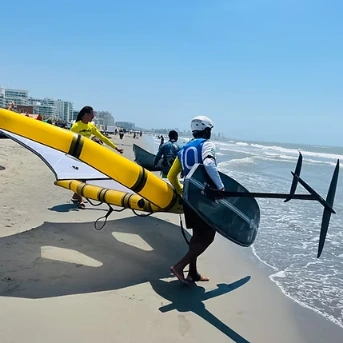

Kite, Wing, or Foil: Choosing Your Addiction

Ten years ago, the choice was simple: windsurfing or kitesurfing. Today, the water sports world has exploded with innovation. Walk down the beach in La Boquilla, and you will see people flying kites, holding handheld wings, or levitating silently on hydrofoils.
If you are a beginner looking to enter the world of wind sports, it can be confusing. Which one is easier? Which one is safer? Which one is more fun? Here is our breakdown to help you decide.
1. Kitesurfing: The King of Adrenaline
Kitesurfing uses a large kite (attached to you via a harness) to pull you across the water on a board.
- The Vibe: High energy, big jumps, speed, and power. It feels like wakeboarding but with unlimited cable.
- Learning Curve: Medium. It takes about 8-10 hours to become independent. The hardest part is mastering kite control.
- Physicality: Surprisingly low impact once you learn. The harness takes the weight, not your arms. It's more about finesse than brute strength.
- Best For: Those who crave speed, jumping high (getting "airtime"), and want to ride in lighter winds than windsurfing allows.
2. Wing Foiling: The Zen Master
The newest craze. You stand on a board with a large hydrofoil underneath and hold a lightweight inflatable wing in your hands. You are not attached to the wing.
- The Vibe: Pure freedom. It is silent, smooth, and feels like surfing an endless wave. Because you are on a foil, you glide above the chop, making it perfect for bumpy water.
- Learning Curve: Steep at first, then fast. Balancing on the foil is tricky. But because there are fewer lines to tangle, it feels safer for many people.
- Physicality: High. Since you hold the wing with your arms (no harness initially), it is a great upper-body workout.
- Best For: Surfers, people who hate tangled lines, and those who want a simplified setup (just pump the wing and go).
3. Kite Foiling: The Light Wind Weapon
This combines a kite with a hydrofoil board. It allows you to race at incredible speeds in barely any wind (5-8 knots).
- The Vibe: Technical and fast. It is the Formula 1 of water sports.
- Learning Curve: Difficult. You need to know how to kite first, then learn how to foil. It requires patience.
- Best For: Experienced kitesurfers who want to double their time on the water, even when the wind is too weak for a normal board.
Comparison Table
| Sport | Learning Time | Gear Cost | Adrenaline |
|---|---|---|---|
| Kitesurfing | 8-12 Hours | $$ | High (Jumps) |
| Wing Foiling | 10-15 Hours | $$$ | Medium (Flow) |
| Kite Foiling | Advanced Only | $$$ | High (Speed) |
Still undecided? The "Discovery Lesson" at Marine Tech is designed exactly for this. We can give you a taste of flying a kite or balancing on a board, helping you find your true calling on the water.